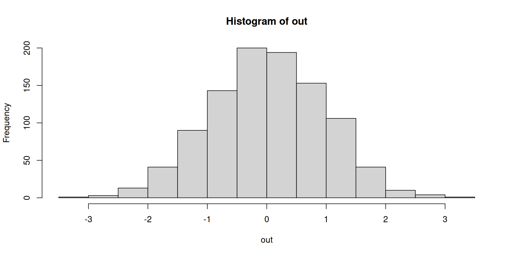

![]()
$a
[1] 2
$b
[1] 5Repeat & package: loops, matrices, functions
The R Statistical Language · Session 3
1 Welcome back
1.1 Where we left off
You can already explore a dataset: shape it with the pipe and dplyr/tidyr, and read it back with ggplot2’s grammar.
- the pipe
|>and thedplyr/tidyrverbs (filter,select,mutate,arrange,group_by/summarise); - base-R plots and ggplot2: histograms, scatters, facets, boxplots;
- the transform → plot → interpret EDA loop.
The move today. Your EDA loop is full of moves you repeat: grouped summaries, reshapes, simulations. This session looks underneath them: we leave the tidyverse and work in base R, replacing copy-paste with loops, reaching into two dimensions with matrices, and turning the moves you repeat into reusable functions you keep.
markdown
## Where we left off {.inv}
You can already *explore* a dataset: shape it with the pipe and `dplyr`/`tidyr`, and read it back with ggplot2's grammar.
- the [pipe]{.green} `|>` and the `dplyr`/`tidyr` verbs (`filter`, `select`, `mutate`, `arrange`, `group_by`/`summarise`);
- [base-R plots]{.green} and [ggplot2]{.amber}: histograms, scatters, facets, boxplots;
- the [transform → plot → interpret]{.indigo} EDA loop.
::: {.callout-desc}
**The move today.** Your EDA loop is full of moves you repeat: grouped summaries, reshapes, simulations. This session looks *underneath* them: we leave the tidyverse and work in base R, replacing copy-paste with loops, reaching into two dimensions with matrices, and turning the moves you repeat into reusable functions you keep.
:::
1.2 Today’s map
1Foundations
2Explore your data
3Repeat & package
Session 3 is the “repeat & package” move of the course: stop doing by hand what R can do by itself:
- repeat & branch: loops (
for,while) and conditionals (if/else,ifelse); - reach 2D: matrices, the vector’s 2D cousin, plus linear algebra and
apply; - package the logic: writing your own functions, scope-aware, vectorised, tested.
The thread. The Monte-Carlo experiment ties the session together: we loop over thousands of samples, and we package that loop into one reusable, tested function. Matrices give us the two-dimensional structures the algebra often lives in.
markdown
## Today's map {.inv}
::: {.session-arc}
<div class="step s1"><span class="n">1</span>Foundations</div><div class="connector"></div><div class="step s2"><span class="n">2</span>Explore your data</div><div class="connector"></div><div class="step s3 current"><span class="n">3</span>Repeat & package</div>
:::
Session 3 is the **"repeat & package"** move of the course: stop doing by hand what R can do by itself:
- [repeat & branch]{.green}: [loops]{.green} (`for`, `while`) and conditionals (`if/else`, `ifelse`);
- [reach 2D]{.amber}: [matrices]{.amber}, the vector's 2D cousin, plus linear algebra and `apply`;
- [package the logic]{.indigo}: [writing your own functions]{.indigo}, scope-aware, vectorised, tested.
::: {.callout-desc}
**The thread.** The Monte-Carlo experiment ties the session together: we *loop* over thousands of samples, and we *package* that loop into one reusable, tested function. Matrices give us the two-dimensional structures the algebra often lives in.
:::
2 Loops and conditionals
2.1 The problem loops solve
Often you want to repeat the same step on many things:
- your function models ten species;
- you average over 1000 simulations;
- you transform every column of a table.
You could copy-paste… or you let R repeat for you.
markdown
## The problem loops solve {.inv}
Often you want to repeat the same step on many things:
- your function models ten species;
- you average over 1000 simulations;
- you transform every column of a table.
You could copy-paste... or you let **R repeat for you**.
2.2 for loops
Repeat a block a fixed number of times: the body runs once per value:
[1] 1
[1] 4
[1] 9
[1] 16
[1] 25Afterwards i and x are normal variables: they still hold the loop’s last value.
markdown
## `for` loops {.inv}
Repeat a block a fixed number of times: the body runs once per value:
::: {.codewindow .r width="100%" name="01-for-loops.R"}
```{r}
#| echo: true
#| output-location: column
for (i in 1:5) {
# i takes each value of the sequence in turn
print(i^2)
}
```
```{r}
#| echo: true
#| output-location: column
total <- 0
for (x in c(2, 4, 6, 8)) {
# the body runs once per value
total <- total + x
}
total
```
:::
::: {.paper-card}
Afterwards `i` and `x` are normal variables: they still hold the loop's last value.
:::
2.3 Pre-allocate for speed
Growing a vector inside a loop is slow. Pre-allocate the result first:
n <- 1000L
# a numeric vector of n zeros
out <- numeric(length = n)
# character(length = n): character vector with n ""
# logical(length = n): logical vector with n FALSE
# integer(length = n): integer vector with n 0L
# vector(mode = "list", length = n): list with n NULL
for (i in 1:n) {
out[i] <- rnorm(1)
}
par(bg = "white")
hist(out)
Rule of thumb. Decide the output’s length before the loop, create the container, then fill slots by index (out[i] <- ...). This is much faster than out <- c(out, ...) inside the loop, a habit that matters once your data grows.
markdown
## Pre-allocate for speed {.inv}
Growing a vector inside a loop is slow. **Pre-allocate** the result first:
::: {.codewindow .r width="100%" name="02-preallocate.R"}
```{r}
#| echo: true
#| output-location: column
n <- 1000L
# a numeric vector of n zeros
out <- numeric(length = n)
# character(length = n): character vector with n ""
# logical(length = n): logical vector with n FALSE
# integer(length = n): integer vector with n 0L
# vector(mode = "list", length = n): list with n NULL
for (i in 1:n) {
out[i] <- rnorm(1)
}
par(bg = "white")
hist(out)
```
:::
::: {.paper-card}
**Rule of thumb.** Decide the output's length *before* the loop, create the container, then fill slots by index (`out[i] <- ...`). This is much faster than `out <- c(out, ...)` inside the loop, a habit that matters once your data grows.
:::
2.4 while loops
Repeat while a condition holds: useful when you don’t know the number of steps in advance:
markdown
## `while` loops {.inv}
Repeat *while a condition holds*: useful when you don't know the number of steps in advance:
::: {.codewindow .r width="100%" name="03-while-loops.R"}
```{r}
#| echo: true
#| output-location: column
x <- 1
while (x < 1000) {
x <- x * 2
}
x
```
:::
::: {.callout-caution title="Guard against infinite loops"}
If the condition never becomes `FALSE`, the loop runs forever. Always add a safeguard, e.g.:
```r
x <- 1
max_iter <- 10
counter <- 0
while (x < 1000 && counter < max_iter) {
x <- x * 2
counter <- counter + 1
}
```
:::
2.5 Conditionals: if / else if / else
Branch on a condition: only one branch runs:
Long vectors break if
if needs a single TRUE/FALSE: use ifelse() for vectors.
markdown
## Conditionals: `if` / `else if` / `else` {.inv}
Branch on a condition: only **one** branch runs:
::: {.codewindow .r width="100%" name="04-if-else.R"}
```{r}
#| echo: true
#| output-location: column
score <- 82
grade <- if (score >= 90) {
"A"
} else if (score >= 80) {
"B"
} else {
"C"
}
grade
```
:::
::: {.callout-caution title="Long vectors break `if`"}
`if` needs a *single* `TRUE`/`FALSE`: use `ifelse()` for vectors.
:::
2.6 Element-wise choice: ifelse
For vectorised decisions, use ifelse(condition, when_true, when_false):
It applies the branch element-wise to a whole vector: no loop needed. This is the idiomatic replacement for “for each value, choose one of two things”.
if vs ifelse.
- Use
if/elseto choose which block of code runs once; - Use
ifelseto map a vector to one of two values.
Mixing them up is a classic beginner bug.
markdown
## Element-wise choice: `ifelse` {.inv}
For **vectorised** decisions, use `ifelse(condition, when_true, when_false)`:
::: {.codewindow .r width="100%" name="05-ifelse.R"}
```{r}
#| echo: true
#| output-location: column
temps <- c(-2, 15, 28, 33)
ifelse(temps > 25, "hot", "not hot")
```
:::
It applies the branch *element-wise* to a whole vector: no loop needed. This is the idiomatic replacement for "for each value, choose one of two things".
::: {.paper-card}
**`if` vs `ifelse`.**
- Use `if/else` to choose *which block of code* runs once;
- Use `ifelse` to map a *vector* to one of two values.
Mixing them up is a classic beginner bug.
:::
2.7 Which tool when?
for: repeat a block a known number of times (loop over columns, pre-allocated slots).
while: repeat until a condition flips (unknown count of steps).
if/else: choose one block of code based on a condition.
ifelse: map a vector element-wise to one of two values.
*apply family: apply a function to each element (Session 1 lists, matrices below).
Often the cleanest loop is no loop at all: vectorization, ifelse, or lapply/vapply are simpler than an explicit for.
markdown
## Which tool when? {.inv}
::: {.spread .spread-md .spread-evenly}
**`for`**: repeat a block a *known* number of times (loop over columns, pre-allocated slots).
**`while`**: repeat *until a condition* flips (unknown count of steps).
**`if/else`**: choose *one block of code* based on a condition.
**`ifelse`**: map a *vector* element-wise to one of two values.
**`*apply` family**: apply a function to each element (Session 1 lists, matrices below).
::: {.paper-card}
Often the *cleanest* loop is no loop at all: vectorization, `ifelse`, or `lapply`/`vapply` are simpler than an explicit `for`.
:::
:::
2.8 The *apply family: loop & apply
Say “apply this function to every element” instead of writing the loop by hand:
The family you first met on lists in Session 1 (and will meet again on matrices as apply, MARGIN = ...):
lapplyalways,sapplywhen simple,vapplywhen you want the guarantee.
It’s “loop, then apply” collapsed into one verb.
markdown
## The `*apply` family: loop & apply {.inv}
Say "**apply this function to every element**" instead of writing the loop by hand:
::: {.codewindow}
::: {.editor .r name="lapply.R"}
```{r}
#| echo: true
l <- list(a = 1:3, b = 4:6)
lapply(l, mean) # a list back — keeps the original structure
```
:::
::: {.editor .r .fragment name="sapply.R"}
```{r}
#| echo: true
l <- list(a = 1:3, b = 4:6)
sapply(l, mean) # tries to simplify: a named vector
```
:::
::: {.editor .r .fragment name="vapply.R"}
```{r}
#| echo: true
l <- list(a = 1:3, b = 4:6)
vapply(l, mean, 0) # like sapply, but you promise the output type
```
:::
:::
::: {.paper-card .fragment fragment-index=3}
The family you first met on lists in **Session 1** (and will meet again on matrices as `apply`, `MARGIN = ...`):
- `lapply` always,
- `sapply` when simple,
- `vapply` when you want the guarantee.
It's "loop, *then* apply" collapsed into one verb.
:::
2.9 Your turn: loops & conditionals
forloop printing squares of1:10.- Loop-sum
1:1000; confirm it equalssum(1:1000). - Given
temps <- c(-5, 4, 12, 25, 31), useifelseto label"freezing"…"hot"by thresholds of your choice. - Monte-Carlo: average 5000 samples of
rexp(30)into a pre-allocated vector, thenhist()it: bell-shaped despite the exponential source?
Lab 1: loops
Lab 1: loops (≈25 min). Continue in lab-1-loops.R. The Monte-Carlo in Q4 is our Central Limit Theorem by simulation: no theorem needed, just loops and histograms.
markdown
## Your turn: loops & conditionals {.paper}
::: {.paper-card}
1. `for` loop printing squares of `1:10`.
2. Loop-sum `1:1000`; confirm it equals `sum(1:1000)`.
3. Given `temps <- c(-5, 4, 12, 25, 31)`, use `ifelse` to label `"freezing"`…`"hot"` by thresholds of your choice.
4. **Monte-Carlo**: average 5000 samples of `rexp(30)` into a pre-allocated vector, then `hist()` it: bell-shaped despite the exponential source?
:::
<div class="paper-adv">
<button type="button" class="paper-adv-btn">Lab 1: loops</button>
<div class="paper-adv-backdrop" hidden></div>
<div class="paper-adv-modal" hidden>
<div class="paper-adv-head"><strong>Lab 1: loops</strong><button type="button" class="paper-adv-close" aria-label="Close">×</button></div>
<div class="adv-body">
<p><strong>Lab 1: loops (≈25 min).</strong> Continue in <code>lab-1-loops.R</code>. The Monte-Carlo in Q4 is our Central Limit Theorem <em>by simulation</em>: no theorem needed, just loops and histograms.</p>
</div>
</div>
</div>
3 Matrices
3.1 What is a matrix?
A matrix is a two-dimensional rectangular array of one type (usually numeric): a vector folded into rows and columns. It’s the 2D cousin of the vector.
[,1] [,2] [,3] [,4]
[1,] 1 4 7 10
[2,] 2 5 8 11
[3,] 3 6 9 12Key distinction. A data frame is a list of columns (columns may differ in type); a matrix is one vector in 2D (single type). For tabular data with mixed types, prefer a data frame/tibble; reach for a matrix when you need linear algebra.
markdown
## What is a matrix? {.inv}
A **matrix** is a *two-dimensional rectangular array* of **one type** (usually numeric): a vector folded into rows and columns. It's the **2D cousin of the vector**.
::: {.codewindow .r width="100%" name="matrix.R"}
```{r}
#| echo: true
#| output-location: column
(m <- matrix(1:12, nrow = 3, ncol = 4))
```
```{r}
#| echo: true
#| output-location: column
m[2, ] # subset with [row, col], like a data frame
```
```{r}
#| echo: true
#| output-location: column
dim(m) # length-2 vector with dimensions
```
```{r}
#| echo: true
#| output-location: column
nrow(m) # number of rows
```
```{r}
#| echo: true
#| output-location: column
ncol(m) # number of columns
```
:::
::: {.paper-card}
**Key distinction.** A data frame is a *list of columns* (columns may differ in type); a matrix is *one vector in 2D* (single type). For tabular *data* with mixed types, prefer a data frame/tibble; reach for a matrix when you need **linear algebra**.
:::
3.2 Building & reshaping
A matrix is just a vector with a dim(ension) attribute; you can build or reshape them freely:
Column-major by default
matrix() fills column by column unless you pass byrow = TRUE. A classic source of “why is my matrix transposed?” surprises.
markdown
## Building & reshaping {.inv}
A matrix is just a vector with a `dim`(ension) attribute; you can build or reshape them freely:
::: {.codewindow .r width="100%" name="reshape.R"}
```{r}
#| echo: true
#| output-location: column
# column-major fill
(A <- matrix(1:6, nrow = 2, ncol = 3))
```
```{r}
#| echo: true
#| output-location: column
# rbind: bind by row
identical(A, rbind(1:3, 4:6))
```
```{r}
#| echo: true
#| output-location: column
# cbind: bind by column
cbind(A, c(7, 8))
```
```{r}
#| echo: true
#| output-location: column
# strip the dim -> back to a vector
dim(A) <- NULL
A
```
:::
::: {.callout-caution title="Column-major by default"}
`matrix()` fills **column by column** unless you pass `byrow = TRUE`. A classic source of "why is my matrix transposed?" surprises.
:::
3.3 Arithmetic & recycling
Element-wise arithmetic works like it does on vectors, and recycling applies:
Watch the recycling axis. A length-2 vector recycles along columns (down), not across: get this wrong and your standardisation silently miscalculates each column.
markdown
## Arithmetic & recycling {.inv}
Element-wise arithmetic works like it does on vectors, and **recycling** applies:
::: {.codewindow .r width="100%" name="matrix-arithmetic.R"}
```{r}
#| echo: true
#| output-location: column
(M <- matrix(1:6, nrow = 2, ncol = 3))
```
```{r}
#| echo: true
#| output-location: column
# scalar multiplies every entry
M * 2
```
```{r}
#| echo: true
#| output-location: column
# length-2 vector recycles down the COLUMNS
M + c(10, 20)
```
:::
::: {.paper-card}
**Watch the recycling axis.** A length-2 vector recycles along columns (down), not across: get this wrong and your standardisation silently miscalculates each column.
:::
3.4 Linear algebra
Matrices exist to do algebra: matrix product, transpose, inverse, determinant:
%*% is not *
A * Bis element-wise;A %*% Bis the matrix product (rows × columns).
Absent the right dimensions, %*% errors, which is usually the clue you wanted a matrix, not a data frame.
markdown
## Linear algebra {.inv}
Matrices exist to do **algebra**: matrix product, transpose, inverse, determinant:
::: {.codewindow}
::: {.editor .r name="01-matrix-algebra.R"}
```{r}
#| echo: true
#| output-location: column
(A <- matrix(c(2, 4, 1, 3), nrow = 2))
```
```{r}
#| echo: true
#| output-location: column
A %*% t(A) # matrix product
```
```{r}
#| echo: true
#| output-location: column
t(A) # transpose
```
:::
::: {.editor .r .fragment name="02-matrix-algebra.R"}
```{r}
#| echo: true
#| output-location: column
solve(A) # inverse
```
```{r}
#| echo: true
#| output-location: column
(A <- matrix(c(2, 4, 1, 3), nrow = 2))
```
```{r}
#| echo: true
#| output-location: column
det(A) # determinant
```
```{r}
#| echo: true
#| output-location: column
diag(A) # extract diagonal
```
:::
::: {.editor .r .fragment name="03-matrix-algebra.R"}
```{r}
#| echo: true
#| output-location: column
eigen(A) # eigen decomposition
```
:::
:::
::: {.callout-caution .fragment title="`%*%` is not `*`"}
- `A * B` is **element-wise**;
- `A %*% B` is the **matrix product** (rows × columns).
Absent the right dimensions, `%*%` errors, which is usually the clue you wanted a matrix, not a data frame.
:::
3.5 Fold a data frame into a matrix
Any rectangular numeric block can be coerced to a matrix when algebra needs it:
Sepal.Length Sepal.Width Petal.Length Petal.Width
1 5.1 3.5 1.4 0.2
2 4.9 3.0 1.4 0.2
3 4.7 3.2 1.3 0.2
4 4.6 3.1 1.5 0.2
5 5.0 3.6 1.4 0.2
6 5.4 3.9 1.7 0.4
7 4.6 3.4 1.4 0.3
8 5.0 3.4 1.5 0.2
9 4.4 2.9 1.4 0.2as.matrix() forces everything to one type: if any column is character, the whole matrix becomes character. Check str() before you coerce, and keep a real data frame for mixed-type data.
markdown
## Fold a data frame into a matrix {.inv}
Any rectangular **numeric** block can be coerced to a matrix when algebra needs it:
::: {.codewindow .r width="100%" name="as-matrix.R"}
```{r}
#| echo: true
#| output-location: column
nums <- iris[, 1:4] # 150 x 4, all numeric
head(nums, n = 9L)
```
```{r}
#| echo: true
#| output-location: column
M <- as.matrix(nums) # data frame -> matrix
dim(M)
```
```{r}
#| echo: true
#| output-location: column
class(M)
```
:::
::: {.paper-card}
`as.matrix()` forces everything to **one type**: if any column is character, the whole matrix becomes character. Check `str()` before you coerce, and keep a real data frame for mixed-type data.
:::
3.6 Row/column summaries & apply
Summarise along one axis with the row*/col* helpers, or generalise with apply:
apply(M, MARGIN, fun): MARGIN = 1 goes down rows, MARGIN = 2 across columns. It’s lapply’s 2D sibling: a loop over one axis hidden inside a one-liner.
markdown
## Row/column summaries & `apply` {.inv}
Summarise along one axis with the `row*`/`col*` helpers, or generalise with `apply`:
::: {.codewindow .r width="100%" name="matrix-apply.R"}
```{r}
#| echo: true
#| output-location: column
(M <- matrix(1:12, 3, 4))
```
```{r}
#| echo: true
#| output-location: column
# per row (MARGIN = 1) - see also rowSums(M)
rowMeans(M)
```
```{r}
#| echo: true
#| output-location: column
# per column (MARGIN = 2) - see also colSums(M)
colMeans(M)
```
```{r}
#| echo: true
#| output-location: column
# standard deviation of each row
apply(M, 1, sd)
```
```{r}
#| echo: true
#| output-location: column
# range of each column
apply(M, 2, \(x) max(x) - min(x))
```
:::
::: {.paper-card}
`apply(M, MARGIN, fun)`: `MARGIN = 1` goes down rows, `MARGIN = 2` across columns. It's `lapply`'s 2D sibling: a loop over one axis hidden inside a one-liner.
:::
3.7 Standardise a matrix (full example)
Let’s standardize (z-score) every column of a matrix, the machinery behind a real analysis:
sweep(M, MARGIN, vector, FUN) applies a function across one axis, here subtracting a column mean.
This is the pattern scale(M) automates; you now see what’s underneath.
markdown
## Standardise a matrix (full example) {.inv}
Let's **standardize** (z-score) every column of a matrix, the machinery behind a real analysis:
::: {.codewindow .r width="100%" name="scale.R"}
```{r}
#| echo: true
M <- matrix(c(1, 100, 2, 200), 2, 2)
mu <- colMeans(M) # mean of each column
sig <- apply(M, 2, sd) # sd of each column
Z <- sweep(M, 2, mu, "-") # subtract each column's mean
Z <- sweep(Z, 2, sig, "/") # divide each column's sd
```
```{r}
#| echo: true
#| output-location: column
colMeans(Z) # ~ 0
```
```{r}
#| echo: true
#| output-location: column
apply(Z, 2, sd) # ~ 1
```
:::
::: {.paper-card}
`sweep(M, MARGIN, vector, FUN)` applies a function across one axis, here subtracting a column mean.
This is the pattern `scale(M)` automates; you now see what's underneath.
:::
3.8 Your turn: matrices
- Build
matrix(1:20, 4, 5); reportdim,rowSums,colMeans. - Transpose it with
t(); what happens to the dimensions? A <- matrix(c(4, 2, 1, 3), 2, 2): computeA %*% solve(A); what should you get?det(A)?- Standardise the columns of
iris[, 1:4](as a matrix) so each column has mean 0, sd 1. Check withcolMeans/apply(., 2, sd).
Lab 2: matrices
Lab 2: matrices (≈20 min). In lab-2-matrices.R. Standardising by hand is the kind of thing you’ll later hand to a function, which is exactly the next section.
markdown
## Your turn: matrices {.paper}
::: {.paper-card}
1. Build `matrix(1:20, 4, 5)`; report `dim`, `rowSums`, `colMeans`.
2. Transpose it with `t()`; what happens to the dimensions?
3. `A <- matrix(c(4, 2, 1, 3), 2, 2)`: compute `A %*% solve(A)`; what should you get? `det(A)`?
4. Standardise the columns of `iris[, 1:4]` (as a matrix) so each column has mean 0, sd 1. Check with `colMeans` / `apply(., 2, sd)`.
:::
<div class="paper-adv">
<button type="button" class="paper-adv-btn">Lab 2: matrices</button>
<div class="paper-adv-backdrop" hidden></div>
<div class="paper-adv-modal" hidden>
<div class="paper-adv-head"><strong>Lab 2: matrices</strong><button type="button" class="paper-adv-close" aria-label="Close">×</button></div>
<div class="adv-body">
<p><strong>Lab 2: matrices (≈20 min).</strong> In <code>lab-2-matrices.R</code>. Standardising by hand is the kind of thing you'll later hand to a <em>function</em>, which is exactly the next section.</p>
</div>
</div>
</div>
4 Writing custom functions
4.1 Why functions?
Copy-pasting code is how bugs multiply. A function lets you:
- name a block of logic so its intent is readable;
- reuse it with different inputs;
- fix a bug once instead of in every copy.
Any analysis you do more than twice deserves a function.
markdown
## Why functions? {.inv}
::: {.spread .spread-md .spread-evenly}
Copy-pasting code is how bugs multiply. A **function** lets you:
- name a block of logic so its *intent* is readable;
- reuse it with different inputs;
- fix a bug **once** instead of in every copy.
Any analysis you do more than twice deserves a function.
:::
4.2 Anatomy of a function
- name: how you call it;
- arguments: inputs (optionals get defaults);
- body & return: code that runs & value handed back.
markdown
## Anatomy of a function {.inv}
::: {.codewindow .r width="100%" name="function-anatomy.R"}
```r
function_name <- function(arg1, arg2 = default) {
result <- ... # body: work on the arguments
return(result) # hands a value back
}
```
:::
::: {.paper-card}
- **name**: how you call it;
- **arguments**: inputs (optionals get defaults);
- **body & return**: code that runs & value handed back.
:::
4.3 Scope: what the body sees
Variables created inside a function live only there: they don’t leak out:
Lexical scoping
A function can see variables from the outside, but relying on that is fragile: pass everything it needs as arguments. Explicit inputs in, explicit output out, is what makes functions testable and reusable.
markdown
## Scope: what the body sees {.inv}
Variables created *inside* a function live **only there**: they don't leak out:
::: {.codewindow .r width="100%" name="scope.R"}
```{r}
g <- function(x) {
internal <- x * 2 # exists only inside the call
internal + 1
}
g(5)
```
:::
::: {.callout-caution title="Lexical scoping"}
A function *can* see variables from the outside, but relying on that is fragile: pass everything it needs as **arguments**. Explicit inputs in, explicit output out, is what makes functions testable and reusable.
:::
4.4 Functions wrap loops
The Monte-Carlo from the loops section is a loop crying out to be a function:
The payoff. The loop from “Your turn: loops” is now a named, reusable, parameterisable tool: clt_sim(n = 100) measures the same CLT with bigger samples, no copy-paste.
markdown
## Functions wrap loops {.inv}
The Monte-Carlo from the loops section is a loop crying out to be a function:
::: {.codewindow .r width="100%" name="monte-carlo.R"}
```{r}
#| output-location: column
clt_sim <- function(n = 30, R = 5000) {
means <- numeric(R)
for (r in 1:R) means[r] <- mean(rexp(n))
means
}
par(bg = "white")
hist(clt_sim())
```
:::
::: {.paper-card}
**The payoff.** The loop from "Your turn: loops" is now a *named, reusable, parameterisable* tool: `clt_sim(n = 100)` measures the same CLT with bigger samples, no copy-paste.
:::
4.5 Vectorised functions & defaults
Most functions are vectorised when building upon vectorized functions; they work element-wise on vectors:
ifelsein the body: the element-wise tool from earlier, and the vectorisedclampneeds no loop at all;- Note the use of default arguments which makes the parameters optional.
markdown
## Vectorised functions & defaults {.inv}
Most functions are **vectorised** when building upon vectorized functions; they work element-wise on vectors:
::: {.codewindow .r width="100%" name="vectorized-function.R"}
```{r}
clamp <- function(x, lo = 0, hi = 1) {
ifelse(x < lo, lo, ifelse(x > hi, hi, x))
}
clamp(c(-1, 0.5, 2))
```
:::
::: {.paper-card}
- `ifelse` in the body: the element-wise tool from earlier, and the vectorised `clamp` needs no loop at all;
- Note the use of default arguments which makes the parameters optional.
:::
4.6 When functions aren’t vectorised: Vectorize() & replicate()
Built-in functions are usually vectorised, but your own (or a third-party) function may only accept one scalar at a time. Two loop-free helpers:
2024-05-01 2024-06-15
"2024" "2024" Loops without loops. Vectorize() turns a scalar-only function into a vector one; replicate(R, expr) re-runs an expression R times and collects results, the function-flavoured cousin of for/sapply. Works with any expression, not just a named function.
markdown
## When functions aren't vectorised: `Vectorize()` & `replicate()` {.inv}
Built-in functions are usually vectorised, but your own (or a third-party) function may only accept **one scalar at a time**. Two loop-free helpers:
::: {.codewindow .r width="100%" name="vectorize.R"}
```{r}
# not vectorised: takes one date string
parse_it <- function(x) strsplit(x, "-")[[1]][1]
```
```{r}
#| output-location: column
# only the first is parsed
parse_it(c("2024-05-01", "2024-06-15"))
```
```{r}
#| output-location: column
# wraps it => element-wise
parse_all <- Vectorize(parse_it)
parse_all(c("2024-05-01", "2024-06-15"))
```
```{r}
#| output-location: column
# repeat an expression R times
replicate(4, mean(rexp(10)))
```
:::
::: {.paper-card}
**Loops without loops.** `Vectorize()` turns a scalar-only function into a vector one; `replicate(R, expr)` re-runs an expression `R` times and collects results, the function-flavoured cousin of `for`/`sapply`. Works with any expression, not just a named function.
:::
4.7 Functions compose into pipelines
The tidyverse pipes data through functions with |>:
penguins |>
dplyr::filter(!is.na(body_mass_g)) |>
dplyr::summarize(avg_mass = mean(body_mass_g))
# wrap a computation in your own function and pipe right in
avg_mass_by <- function(df, group) {
df |>
dplyr::filter(!is.na(body_mass_g)) |>
dplyr::group_by({{ group }}) |>
dplyr::summarize(avg_mass = mean(body_mass_g, na.rm = TRUE))
}{ var } is the tidyverse “embrace” shortcut that passes a bare column name into a function cleanly. We’ll rely on it, and on writing tidy functions, throughout the Reproducible Workflows course.
markdown
## Functions compose into pipelines {.inv}
The tidyverse pipes data through functions with `|>`:
::: {.codewindow .r width="100%" name="pipe.R"}
```r
penguins |>
dplyr::filter(!is.na(body_mass_g)) |>
dplyr::summarize(avg_mass = mean(body_mass_g))
# wrap a computation in your own function and pipe right in
avg_mass_by <- function(df, group) {
df |>
dplyr::filter(!is.na(body_mass_g)) |>
dplyr::group_by({{ group }}) |>
dplyr::summarize(avg_mass = mean(body_mass_g, na.rm = TRUE))
}
```
:::
::: {.paper-card}
**`{{ var }}`** is the tidyverse "embrace" shortcut that passes a bare column name into a function cleanly. We'll rely on it, and on writing tidy functions, throughout the Reproducible Workflows course.
:::
4.8 Test your functions
A good habit: check a function against a case you already know the answer to:
Why it matters. Writing one-line assertions (stopifnot) turns “trust me” into “checked automatically”. You’ll build on this with a proper testing framework in the Reproducible Workflows course.
markdown
## Test your functions {.inv}
A good habit: check a function against a case you *already know the answer to*:
::: {.codewindow .r width="100%" name="test.R"}
```r
stopifnot(all(clamp(c(-1, 0.5, 2)) == c(0, 0.5, 1)))
```
:::
::: {.callout-desc}
**Why it matters.** Writing one-line *assertions* (`stopifnot`) turns "trust me" into "checked automatically". You'll build on this with a proper testing framework in the Reproducible Workflows course.
:::
4.9 Your turn: functions
zscore(x)=(x - mean(x)) / sd(x), tested onc(1,2,3,4,5).mad_ratio(x)=mean(abs(x - mean(x))) / sd(x), tested onrnorm(1000).describe(x)→ named list ofmean,sd,median,min,max.- (Stretch) Wrap the matrices standardisation into
standardize_cols(M)usingsweep.
Lab 3: functions
Lab 3: functions (≈25 min). Continue in lab-3-functions.R; the matrices standardisation in Q4 hands your sweep work a reusable home.
markdown
## Your turn: functions {.paper}
::: {.paper-card}
1. `zscore(x)` = `(x - mean(x)) / sd(x)`, tested on `c(1,2,3,4,5)`.
2. `mad_ratio(x)` = `mean(abs(x - mean(x))) / sd(x)`, tested on `rnorm(1000)`.
3. `describe(x)` → named list of `mean`, `sd`, `median`, `min`, `max`.
4. (Stretch) Wrap the matrices standardisation into `standardize_cols(M)` using `sweep`.
:::
<div class="paper-adv">
<button type="button" class="paper-adv-btn">Lab 3: functions</button>
<div class="paper-adv-backdrop" hidden></div>
<div class="paper-adv-modal" hidden>
<div class="paper-adv-head"><strong>Lab 3: functions</strong><button type="button" class="paper-adv-close" aria-label="Close">×</button></div>
<div class="adv-body">
<p><strong>Lab 3: functions (≈25 min).</strong> Continue in <code>lab-3-functions.R</code>; the matrices standardisation in Q4 hands your <code>sweep</code> work a reusable home.</p>
</div>
</div>
</div>
5 Wrap up
5.1 Three moves, one toolbox
Repeat, reach, package.
markdown
## Three moves, one toolbox {.dark auto-animate=true background-color="#17251F"}
::: {.big-title data-id="title" style="left:88px; top:150px; width:720px; font-size:72px;"}
Repeat,
reach,
package.
:::
::: {.panel data-id="draft" style="left:840px; top:150px; width:150px; height:360px;"}
:::
::: {.panel data-id="review" style="left:1006px; top:150px; width:150px; height:170px;"}
:::
::: {.panel data-id="release" style="left:1006px; top:340px; width:150px; height:170px;"}
:::
5.2 Repeat, reach, package
One toolbox for repetition & structure.
Repeat & branch
for/while to loop, if/else and ifelse to branch, *apply and pre-allocation for speed.
Reach 2D with matrices
One vector in two dimensions: build with matrix, do algebra with %*%/solve, summarise rows/columns with apply and sweep.
Package the logic
Turn repeated work into named, vectorised, tested functions: scope-aware, pipe-friendly, reusable.
markdown
## Repeat, reach, package {.light auto-animate=true background-color="#F1EEE6"}
::: {.big-title data-id="title" style="left:92px; top:104px; width:1100px; font-size:44px;"}
One toolbox for repetition & structure.
:::
::: {.panel .card data-id="draft" style="left:96px; top:220px; width:340px; height:360px;"}
[Repeat & branch]{.h}
[`for`/`while` to loop, `if/else` and `ifelse` to branch, `*apply` and pre-allocation for speed.]{.p}
:::
::: {.panel .card data-id="review" style="left:470px; top:220px; width:340px; height:360px;"}
[Reach 2D with matrices]{.h}
[One vector in two dimensions: build with `matrix`, do algebra with `%*%`/`solve`, summarise rows/columns with `apply` and `sweep`.]{.p}
:::
::: {.panel .card data-id="release" style="left:844px; top:220px; width:340px; height:360px;"}
[Package the logic]{.h}
[Turn repeated work into named, vectorised, tested functions: scope-aware, pipe-friendly, reusable.]{.p}
:::
5.3 Your toolbox: source() your own .R
From one-off script to a toolbox you keep.
Bundle the functions you wrote today
Every function in this session (clt_sim(), zscore(), your loop and matrix helpers) is a tool. Drop them all into one file my_tools.R and source("my_tools.R") when an analysis needs them. That file is your first toolbox: a step toward a real package, and the exact artifact the Reproducible Workflows course picks up: source()d inside your Quarto reports, tracked by git, pinned by renv.
markdown
## Your toolbox: `source()` your own `.R` {.light auto-animate=true background-color="#F1EEE6"}
::: {.big-title data-id="title" style="left:92px; top:104px; width:1100px; font-size:44px;"}
From one-off script to a toolbox you keep.
:::
::: {.panel .card data-id="release" style="left:96px; top:200px; width:800px; height:400px;"}
[Bundle the functions you wrote today]{.h}
[Every function in this session (`clt_sim()`, `zscore()`, your loop and matrix helpers) is a tool. Drop them all into one file `my_tools.R` and `source("my_tools.R")` when an analysis needs them. That file is your first **toolbox**: a step toward a real package, and the exact artifact the Reproducible Workflows course picks up: `source()`d inside your Quarto reports, tracked by git, pinned by `renv`.]{.p style="font-size:24px; line-height:1.6;"}
:::
::: {.panel .marker data-id="draft" style="left:944px; top:230px;"}
:::
::: {.panel .marker data-id="review" style="left:944px; top:290px;"}
:::
5.4 Next time
Reproducible Workflows: Quarto, reports, git, and publishing.
Between sessions: finish any outstanding labs and collect your best functions into your my_tools.R. The Reproducible Workflows course picks up that toolbox and turns it into reports, source()d in, versioned with git: bring your penguins work and your tools along.
markdown
## Next time {.dark .finale auto-animate=true background-color="#17251F"}
::: {.big-title data-id="title" style="left:240px; top:300px; width:800px; font-size:66px; text-align:center;"}
Reproducible Workflows: Quarto, reports, git, and publishing.
:::
::: {.panel data-id="draft" style="left:470px; top:150px; width:110px; height:110px;"}
:::
::: {.panel data-id="review" style="left:590px; top:150px; width:110px; height:110px;"}
:::
::: {.panel data-id="release" style="left:710px; top:150px; width:110px; height:110px;"}
:::
::: {style="position:absolute; left:96px; top:600px; width:1024px; font-size:17px; color:rgba(241,238,230,0.62);"}
Between sessions: finish any outstanding labs and collect your best functions into your `my_tools.R`. The Reproducible Workflows course picks up that toolbox and turns it into reports, `source()`d in, versioned with git: bring your penguins work and your tools along.
:::
A. Stamm aymeric.stamm@cnrs.fr · The R Statistical Language · Session 3